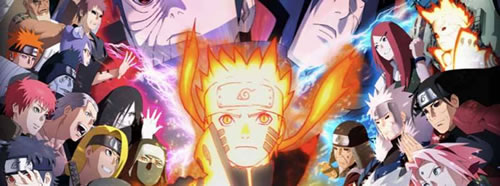
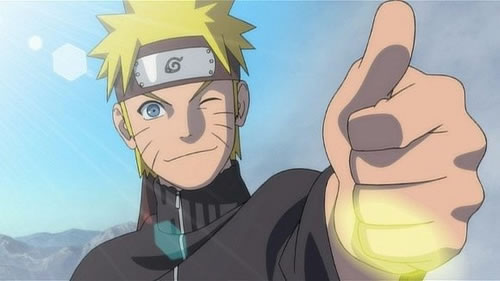
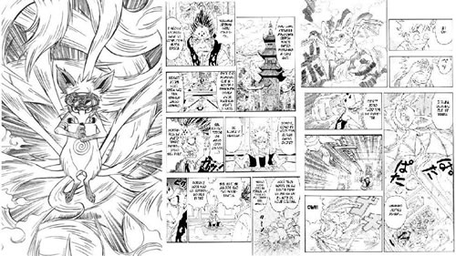
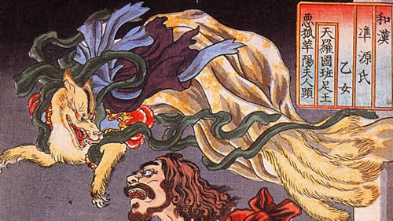
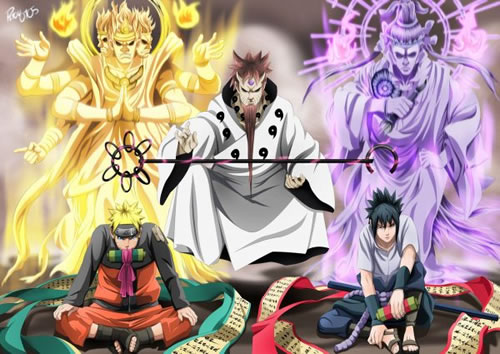

Não se pode negar que o ninja loiro é um verdadeiro fenômeno, ele já foi classificado no top dois dos personagens mais populares nas cinco primeiras pesquisas oficiais da Shonen Jump. E fora destas pesquisas, Naruto já foi o primeiro lugar duas vezes. Claro, ele pode ter deslizado para o quarto lugar durante a sexta pesquisa de personagem, mas ele logo recuperou seu status ao chegar no primeiro lugar, mais uma vez.
Autor: Masashi KishimotoEstúdio de Animação: PierrotNúmero de Episódios: 220, 500(shippuden)Arcos: O anime contém diversos arcos entre eles alguns fillers.
HadesSpin-offs: Devido a seu grande sucesso a franquia conta com uma continuação direta das historias de naruto chamado Boruto-next generations além de diversos filmes.

Dattebayo
Repetido por naruto em diversos momentos em qualquer situação o slogan tem seus motivos:


O Naruto original
Aqui está um pequeno fato que muitos fãs de Naruto não sabem. Antes de Naruto ser um garoto ninja humano, o criador Masashi Kishimoto publicou originalmente um mangá na Akamaru Jump em 18 de agosto de 1997 sobre um personagem chamado Naruto, que não era realmente Naruto (pelo menos, não o Naruto que conhecemos). Em vez de ter uma raposa de demônio selada dentro dele, Naruto era realmente uma raposa demoníaca, que apenas decidiu viver sua vida como um menino humano.
Quantas Missões?
No mundo shinobi, existem vários tipos de missões que os ninjas são designados para completar a fim de ganhar dinheiro para a sua aldeia. Cada missão é dividida em seis classificações, todas baseadas em dificuldades. Do mais baixo ao mais alto, existem missões de E, D, C, B, A e S.
Inspiração na Mitologia
O desenvolvimento de Naruto encontrou um pouco de inspiração do kitsune japonês, um tipo de yōkai , ou entidade espiritual. Por que isso importa? Porque kitsune é freqüentemente traduzido como espírito de raposa. Hmm. O Kyuubi de Naruto é um demônio raposa.


O Databook
Quem não gosta de ataques que podem causar destruição em um nível exponencial? Tal é o caso das Esferas de Busca da Verdade, que são capazes de “transformar” a vítima em pó (onde a transformação significa obliteração). De qualquer forma, Naruto ganha a habilidade de criar nove dessas orbes do tamanho de sua mão.
Espero que tenha curtido ler algumas curiosidades sobre essa franquia que se tornou tão
popular no Brasil. Se curtiu ou deseja compartilhar algo a mais deixe nos comentarios.
Fontes: allcenter.com , aficionados.com


 Veja
Mais...
Veja
Mais...